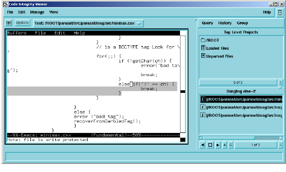

To view Caliper results
1 Navigate to the query you want to view the results for.
2 Select the query.
If a selected query has found hits, the number of hits appears in the Instances box at the bottom right corner of the Caliper window, and the Browse Instances button becomes active.
3 Click the Browse Instances button to import the hits for the selected query into a Viewer window.
In the Viewer, hit results appear in the bottom portion of the MiniBrowser. Lists of hits are titled list0, list1, list2, and so on. They also appear in the Browser’s Results column.
The main Viewer window displays the source code for the selected file, with the hit highlighted in the text.
